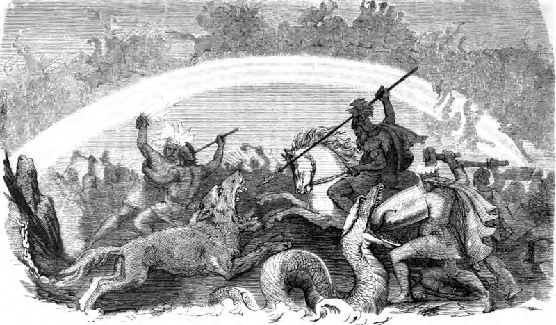

| Ragnarok | |
|---|---|
|
 |
|
| Pronunciation | |
| Old Norse: |
Ragnarök |
| Modern English: |
Ragnarok |
Ragnarok, the Fate of the Gods
Ragnarok is the fated end of the world in Norse mythology. It is said that when the time comes, Heimdall will blow the Gjallarhorn, and the gods will meet the giants on the battlefield. Many will perish: Fenrir and Odin, Thor and Jormungandr, Freya, even Sol, the sun will be eaten. All that will be left is a few gods and one man and woman to begin the world anew.